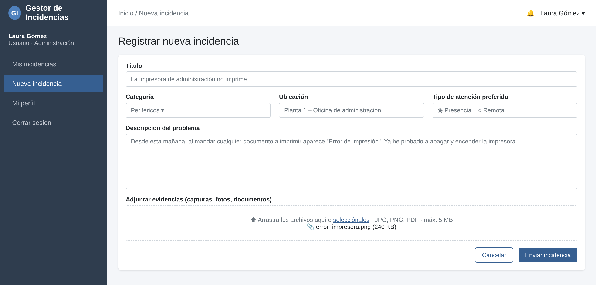
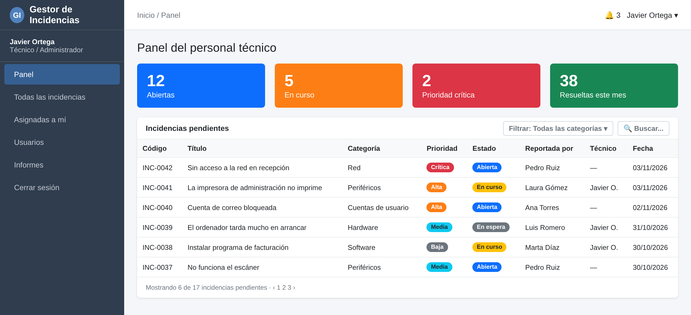
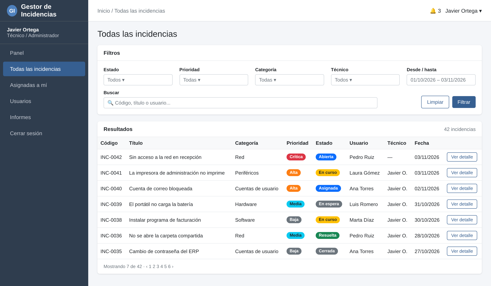
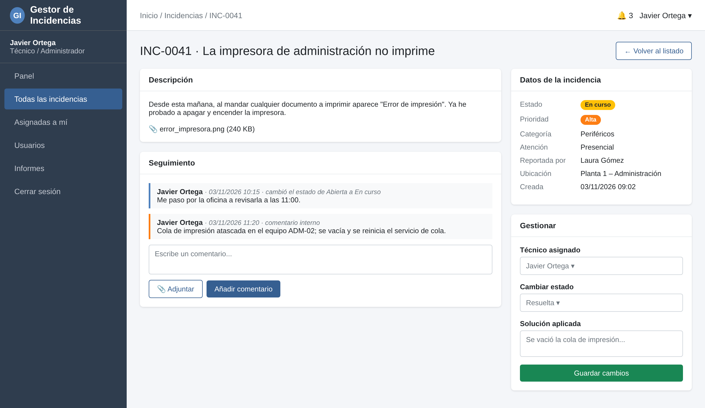
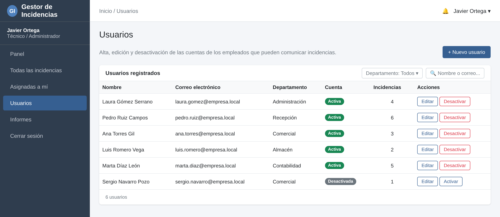
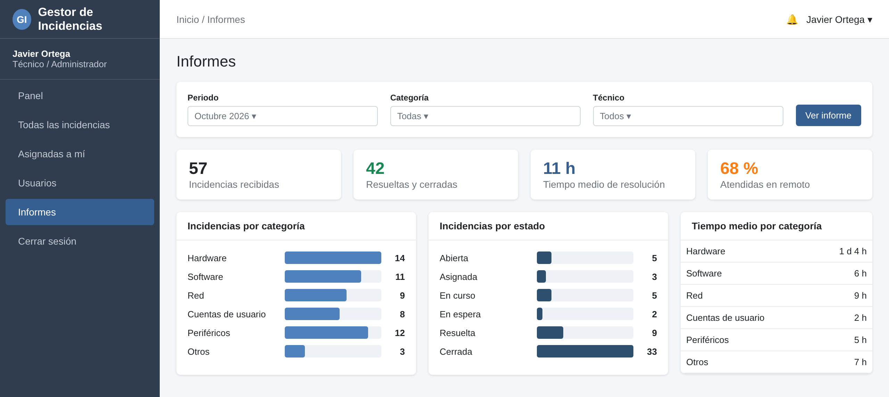
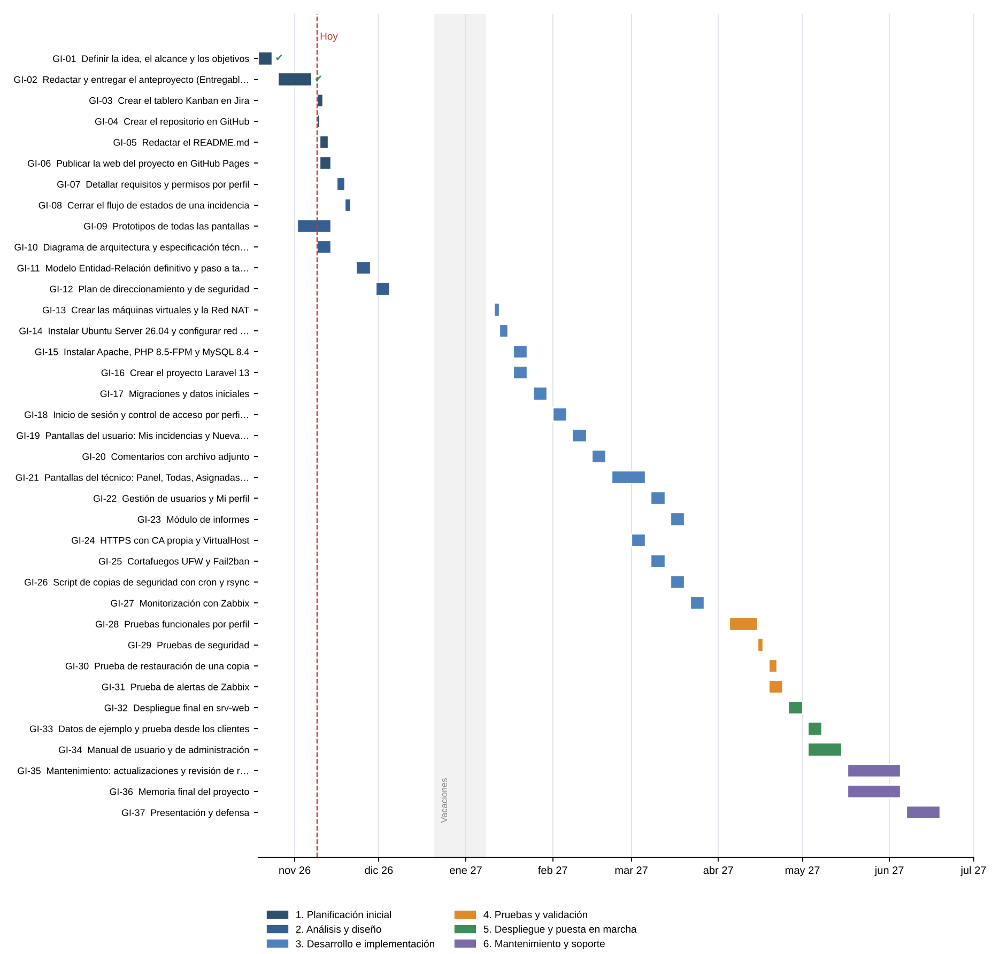

Una aplicación web sencilla para que los empleados comuniquen sus problemas informáticos y el personal técnico los gestione y resuelva, con todo el seguimiento en un solo lugar. Desplegada sobre una infraestructura propia, segura y monitorizada.
En una organización pequeña los problemas informáticos llegan por WhatsApp, por correo, por teléfono o en el pasillo. El resultado es fácil de imaginar.
Existen herramientas profesionales como osTicket, GLPI, Zammad o Jira Service Management, pero son demasiado completas o caras para este caso. Este proyecto implementa solo lo necesario y, además, cubre todo el ciclo de vida del servicio: aplicación, servidor, seguridad, copias de seguridad y monitorización.
Diseñar, desarrollar e implementar un sistema web para registrar, gestionar y hacer el seguimiento de incidencias informáticas en pequeñas organizaciones.
Autenticación con dos perfiles, registro de incidencias con categoría, prioridad y estado, comentarios, adjuntos e historial.
Modelo Entidad-Relación implementado en MySQL, con integridad referencial y un usuario de permisos mínimos.
Ubuntu Server con Apache, acceso solo por HTTPS, cortafuegos UFW, SSH con clave y Fail2ban.
Copia diaria automatizada de la base de datos y los adjuntos, enviada a otro servidor y probada con una restauración.
Zabbix vigila CPU, memoria, disco y los servicios Apache y MySQL, y avisa cuando algo falla.
Trabajo planificado en 37 tareas, con seguimiento en un tablero Kanban de Jira y documentación en GitHub.
Dos perfiles fijos con su propio menú. Estados de una incidencia: Abierta → Asignada → En curso → (En espera) → Resuelta → Cerrada.
Herramientas trabajadas en el ciclo, en sus versiones estables más recientes.
El proyecto está terminando la planificación inicial y ha comenzado el análisis y diseño. La aplicación se desarrollará a partir de enero de 2027.
Arquitectura de la solución: los clientes acceden por HTTPS a srv-web, donde el cortafuegos filtra el tráfico, Apache entrega las peticiones a Laravel y este consulta MySQL. srv-backup monitoriza con Zabbix y guarda las copias de seguridad.

Nueva incidencia · el usuario describe el problema y adjunta una captura.

Panel del técnico · indicadores e incidencias pendientes.

Todas las incidencias · listado con filtros.

Detalle · comentarios, estado, técnico y solución.

Usuarios · alta, edición y desactivación de cuentas.

Informes · resumen del soporte por periodo.
Todos los prototipos y diagramas, con sus archivos editables, están en la carpeta docs/diseno del repositorio.
6 fases, 37 tareas y unas 204 horas de trabajo estimadas. Cada tarea tiene su descripción, dependencias, fechas, estimación y criterio de finalización.

Ver el detalle de todas las tareas · Descargar el anteproyecto (PDF)